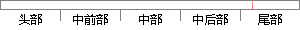

在系统测试中，主要包括功能测试和健壮性测试这两方面的测试内容。
片段位置图

相似结果|
相似片段 1：主要包括异常测试、健壮性测试、性能测试。经过系统非功能性需求测试确保了用户信息管理模块功能无明显异常，具有较好的健壮性并且满足性能需求，保证了教务管理系统全面的覆盖了需求分析中的非功能性需求的要求
相似片段 2：提供了真实的依据。(2)系统测试的内容一般地，系统测试的主要内容包括：①健壮性测试。即测试在异常情况下软件系统是否能够正常运行。健壮性包括两方面：一是恢复能力，二是容错能力。②功能测试。即看图书馆
相似片段 3：系统测试主要包括功能测试和健壮性测试。其中功能测试是测试软件系统的功能是否正确，是否符合需求分析的要求。健壮性测试则是测试软件在异常情况下能够正常运行的能力，包括容错能力和恢复能力。4.2 系统测试
相似片段 4：对软件进行测试，依据软件测试的目标和指标，主要可以采用功能测试、性能测试，包括系统的可靠性测试、安全性测试、负载测试、压力测试、健壮性测试、并发测试、配置测试、外观测试和强度测试测试等。测试的方法和
相似片段 5：例如开发过程中对各个方法进行单元测试，对各功能模块进行集成测试等。在系统开发完成后，必须进行全面的系统测试，检查系统的对功能需求、非功能需求是否完58成以及完成的程度。通常，系统测试主要包括以下几个
相似片段 6：为了让软件更好的服务于用户，进行GUI测试就变得非常重要。GUI测试与用户友好性测试和可操作性测试又重复，但GUI测试更关注的事对图形界面的测试。GUI测试主要包括两方面的内容，一方面是界面实现
相似片段 7：达到预期，功能测试的依据是需求分析。判断软件质量最重要的因素是软件的正确性，所以功能测试是必须进行的。②健壮性测试。即测试在异常情况下软件系统是否能够正常运行。健壮性包括两方面：一是恢复能力，二是容错
相似片段 8：测试范围包括了 YWCRM系统各个模块的功能、业务流程、与计费系统、客服系统、综合网管系统等外围系统的接口规则和接口数据的完整性、准确性。②确定系统集成测试的内容测试内容包括系统的业务功能测试
相似片段 9：将要上线的设备符合健壮性要求。·健壮性测试不建议用于线上正在运行的设备。基线检查适用原则：具体设备的安全要求（功能、配置）应包括适用设备运行的操作系统、数据库和应用程序三个层面的最低要求，并依实际情况
|
※ 片段修改建议 ※
近似词参考：- 系统：体系
- 主要：首要 重要
- 包括：包罗 包孕 包含 囊括
- 功能：功效
系统自动生成语句：在体系测试中，首要包罗功效测试和健壮性测试这两方面的测试内容。
注：本片段修改建议为系统自动生成，仅供参考。